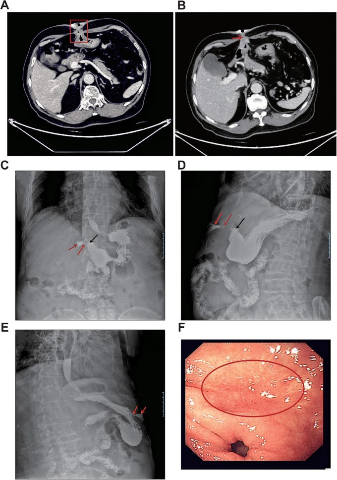
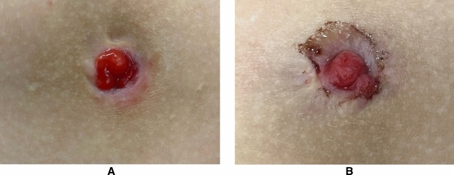
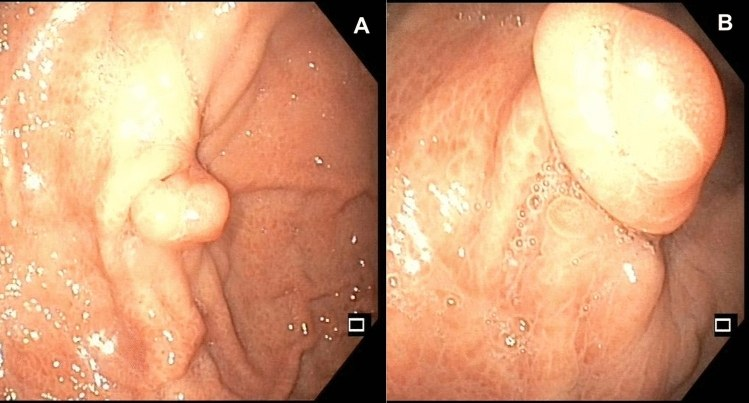

1813 — Rò da–dạ dày tồn tại sau rút ống mở thông ở trẻ / Persistent gastrocutaneous fistula after gastrostomy removal
Tags: pattern:ro-da-day pattern:ro-sau-rut-ong vung:da-day vung:thanh-bung protocol:chup-ro-can-quang protocol:noi-soi protocol:CT-bung
Mức chắc chắn (certainty): tổng hợp y văn (literature synthesis) — tổng hợp từ y văn mở 2011–2026, đối chiếu PMCID (Europe PMC): Alshafei A, J Indian Assoc Pediatr Surg 2017, PMC5615896; Bratu I & Bharmal A, ISRN Gastroenterol 2011, PMC3168482; Corsello A, Surg Endosc 2024, PMC11525288; Stringel G, JSLS 2013, PMC3662724; Tee Z, Endosc Int Open 2026, PMC12951039; Huang QS, Front Med (Lausanne) 2026, PMC13275214. Số chưa kiểm chứng ghi "chưa rõ".
Bài này là "chuyện sau khi rút ống": vì sao lỗ rò không đóng, khi nào chờ, chụp gì để thấy đường rò, và khi nào can thiệp. Cai nuôi ống và rút ống ở trẻ ở 1805; biến chứng ống, buried bumper và kiểm tra vị trí ở 083; an toàn nuốt ở 081.
1. Tổng quan bệnh học – cơ chế hình ảnh
- Định nghĩa: sau khi rút ống mở thông dạ dày (gastrostomy device, GD), đường hầm da–dạ dày thường tự đóng trong vài giờ đến 1–2 tuần. Khi đường thông còn lại > 1 tháng, gọi là rò da–dạ dày tồn tại (persistent gastrocutaneous fistula, GCF); nhiều tác giả dùng mốc > 1–3 tháng (Bratu I 2011, PMC3168482; Corsello A 2024, PMC11525288).
- Tần suất (con số rất khác nhau vì định nghĩa và dân số):
- 4,5% (49/1.083) trẻ đặt gastrostomy trong 10 năm phải mổ đóng rò (Bratu I 2011, PMC3168482).
- 16–45% theo y văn; loạt tuyến ba 58% (34/59) vì nhiều trẻ < 2 tuổi** và **để ống > 2 năm (Alshafei A 2017, PMC5615896).
- Tổng quan đa trung tâm nhi: 4,5–44%; định nghĩa "tồn tại" > 1–3 tháng (Corsello A 2024, PMC11525288).
- Khoảng 5–45% được dùng trong tư vấn trước khi rút ống (Bratu I 2011, PMC3168482; Stringel G 2013, PMC3662724).
- Vì sao đường rò không đóng (TẠI SAO, không chỉ "do lâu ngày"):
- Biểu mô hóa đường hầm: biểu mô da và niêm mạc dạ dày phát triển gặp nhau, tốc độ ~7 mm/ngày, tạo ống có thành biểu mô không thể dính liền. Đây là lý do rò mạn không tự đóng dù không còn ống.
- Đường hầm ngắn ở trẻ nhỏ: trẻ < 2 tuổi ít mô dưới da → khoảng cách da–dạ dày ngắn → biểu mô hóa sớm và nhanh; tuổi đặt ống trung bình 24,03 ± 39,59 tháng ở nhóm rò so với 52,24 ± 67,89 tháng ở nhóm đóng (Alshafei A 2017, PMC5615896).
- Thời gian lưu ống: nhóm rò 57,65 ± 39,42 tháng so với 31,68 ± 30,19 tháng; 80% ca rò để ống > 2 năm, ngắn nhất 1,5 năm (Alshafei A 2017, PMC5615896). Loạt khác: ống lưu trung bình 2,3 ± 2,2 năm (Bratu I 2011, PMC3168482).
- Nhiễm khuẩn lỗ mở tái diễn: 91% ca rò có ≥ 2 đợt nhiễm lỗ mở cần kháng sinh; viêm–sẹo làm đường hầm xơ, không dính (Alshafei A 2017, PMC5615896).
- Can thiệp làm rộng đường hầm: nâng cỡ ống (upsizing) 41%, đổi sang nút thấp (MIC-KEY button) 51%, mở bằng Stamm 29% so với PEG 71% — tất cả liên quan tới rò tồn tại (Alshafei A 2017, PMC5615896).
- Yếu tố không chứng minh được: bệnh nền (GERD 65% vs 60%, p = 0,256), bệnh thần kinh, tim bẩm sinh, suy giảm miễn dịch không dự báo rò trong loạt này (Alshafei A 2017, PMC5615896).
- Diễn tiến tự nhiên: đa số đóng trong 1–2 tuần; nếu còn sau 2–3 tháng, khả năng tự đóng rất thấp. Trong loạt 49 ca phải mổ, rò tồn tại 2,0 ± 3,0 tháng trước khi đóng (Bratu I 2011, PMC3168482). Chiến lược chờ 2–3 tháng là hợp lý (Alshafei A 2017, PMC5615896).
- Biến chứng của chính rò: rỉ dịch dạ dày gây viêm da bỏng acid, đau, nhiễm trùng da, mất nước–điện giải, chậm tăng cân, mùi và ảnh hưởng tâm lý. Mổ đóng rò không lành tính: biến chứng sau mổ 12,2% (6/49) — sốt/nhiễm trùng 4, loét đỏ da 2; nằm viện 2,0 ± 3,3 ngày (Bratu I 2011, PMC3168482).
- Vật lý hình ảnh — vì sao chụp cản quang thấy rò:
- Thuốc cản quang tan trong nước (iohexol) chảy theo đường có trở lực thấp nhất từ lòng dạ dày ra da; cột cản quang liên tục từ hang vị qua thành bụng là chốt. Không dùng baryt nếu có nguy cơ tràn vào phúc mạc: baryt gây viêm phúc mạc hóa học và không hấp thu.
- CT: đường rò là cấu trúc mô mềm 40–60 HU xuyên qua lớp mỡ −50 đến −100 HU, mất mặt phẳng mỡ giữa dạ dày và thành bụng; cản quang trong lòng 100–300 HU. Khí trong ổ −1000 HU. CT thấy ổ dịch, áp-xe, hoại tử, tụ máu mà chụp rò không thấy.
- Siêu âm: đường rò là dải giảm âm từ da vào dạ dày, có thể bơm nước muối vô khuẩn qua lỗ rò để làm rõ; không nhiễm xạ, hợp với trẻ nhỏ.
- Nội soi: thấy lỗ trong ở dạ dày, đánh giá viêm/loét/hẹp môn vị, và sinh thiết nếu nghi ác tính; mô dạ dày ở lỗ da (mucous bud) xác nhận nguồn gốc dạ dày.
- Ca minh họa kỹ thuật (người lớn, hiếm): bệnh nhân 81 tuổi, nốt thành bụng 30 năm rồi vỡ, rỉ ~500 mL/ngày; CT: mất mặt phẳng mỡ giữa hang vị trước và thành bụng, đường rò liên tục từ lòng dạ dày ra da; chụp lưu thông dạ dày bằng iohexol thấy thoát cản quang từ thành trước hang vị qua thành bụng ra da; ổ trong 1,2 × 0,4 cm, đường rò 4,5 × 2,5 cm (Huang QS 2026, PMC13275214). Đây là GCF tự phát do loét lành tính — cực hiếm, khác bối cảnh nhi sau gastrostomy, nhưng minh họa rất rõ nguyên lý chụp.
2. Mẫu hình + chẩn đoán phân biệt theo vị trí và dịch tiết (gamut)
Câu hỏi trung tâm: "dịch chảy ra là gì, và đường rò đi từ đâu tới đâu?"
- Theo tính chất dịch:
- Dịch dạ dày: trong/đục, lẫn mảnh thức ăn, pH thấp, chảy nhiều khi ăn — rò dạ dày–da.
- Dịch mật: vàng–xanh, không mùi phân — rò mật–da hoặc tá tràng–da.
- Dịch phân/nhiễm khuẩn: mùi phân, phân trong túi — nghĩ rò dạ dày–đại tràng (gastrocolic) hoặc ruột non–da, không phải GCF đơn thuần.
- Theo nguyên nhân: (1) sau rút gastrostomy — hay nhất ở trẻ; (2) sau mổ (cắt dạ dày, bariatric, tạo hình); (3) chấn thương; (4) loét dạ dày xuyên thành (hiếm); (5) ác tính xâm lấn; (6) bệnh Crohn, dị vật, lưới nhân tạo; (7) bẩm sinh (rất hiếm).
- Theo hình thái đường rò: đơn giản (một đường thẳng, không ổ dịch) → can thiệp nội soi/mổ nhỏ; phức tạp (ổ dịch, nhiều nhánh, dính tạng, hoại tử) → CT + mổ.
- Gamut "lỗ da rỉ dịch vùng quanh rốn ở trẻ đã từng đặt gastrostomy": GCF · buried bumper (nút bị vùi trong thành bụng, không thấy đầu ống) · áp-xe thành bụng · viêm mô tế bào · rò dạ dày–đại tràng · thoát vị/da thừa · rò dịch tụy (nếu có viêm tụy) · u loét (hiếm).
- Mnemonic "GAS": Gastrostomy tract, Abscess, Surgical leak — cộng thêm Colon (gastrocolic) và Malignancy.
3. Bảng so sánh phân biệt (ma trận đối chiếu)
| Thực thể (entity) | Hình ảnh điển hình | Chốt vào (rule-in) | Chốt loại (rule-out) | Gợi ý xác nhận |
|---|---|---|---|---|
| GCF sau gastrostomy | Chụp rò: cột cản quang liên tục từ dạ dày ra da; CT: mất mặt phẳng mỡ, đường mô mềm xuyên thành bụng | Tiền sử rút ống + rỉ dịch dạ dày + cột cản quang liên tục | Không thấy đường thông; lỗ da khô, đã đóng | Chụp rò bằng iohexol; nội soi |
| Buried bumper | Không thấy đầu ống ngoài da; CT/nội soi: nút nằm trong thành dạ dày/thành bụng | Không thấy nút/ống + đau, rỉ dịch quanh lỗ + nội soi thấy nút vùi | Đầu ống nhìn thấy, di động bình thường | Nội soi, CT |
| Áp-xe thành bụng | CT: ổ dịch có vỏ ngấm thuốc, khí trong ổ; siêu âm: ổ hỗn hợp âm | Ổ dịch + vỏ + sốt/đau + khí trong ổ | Không ổ dịch, chỉ đường rò thẳng | CT có cản quang, siêu âm |
| Thủng/thoát dạ dày tự do | CT: khí tự do dưới hoành, dịch tự do; X-quang: liềm khí | Khí tự do + đau bụng cấp + phản ứng phúc mạc | Khí khu trú trong ổ rò, không tự do | CT bụng cấp |
| Rò dạ dày–đại tràng | Chụp cản quang: cản quang vào đại tràng; CT: đường rò tới colon; khí trong dạ dày | Phân trong túi + cản quang vào colon | Không có phân, cản quang chỉ ra da | Chụp cản quang, CT, nội soi |
| Rò do ác tính | CT: khối loét bờ không đều, hạch, dày thành; nội soi: tổn thương loét | Khối + sụt cân + thiếu máu + sinh thiết ác | Niêm mạc lành, không khối | Nội soi + sinh thiết, CT |
| Viêm da/nhiễm khuẩn lỗ ra | Da đỏ, trợt, mủ; không có đường sâu | Đỏ/trợt/mủ nông, cải thiện với chăm sóc da | Không rỉ dịch dạ dày, không đường rò | Lâm sàng, cấy da |
| Rò tụy/tá tràng sau mổ | Dịch tiêu hóa nhiều, men tụy cao; CT: ổ dịch quanh tụy | Amylase dịch cao + bối cảnh mổ tụy/tá tràng | Dịch dạ dày, pH thấp, không men tụy | Xét nghiệm dịch, CT |

(A,B) CT có cản quang: mất mặt phẳng mỡ giữa hang vị trước và thành bụng, đường rò liên tục (khung/đỏ). (C–E) Chụp lưu thông dạ dày bằng iohexol: cản quang thoát từ hang vị (mũi tên đen) qua đường rò (mũi tên đỏ) ra da. (F) Nội soi: lỗ trong 1,2 × 0,4 cm. Nguồn: Huang QS et al., Front Med 2026, PMC13275214, CC BY 4.0.Dấu hiệu chốt và ngưỡng
- Thời gian: rò > 1 tháng sau rút ống = tồn tại; > 2–3 tháng → khả năng tự đóng thấp, cân nhắc can thiệp (Bratu I 2011, PMC3168482; Alshafei A 2017, PMC5615896).
- Kích thước: không có ngưỡng tuyệt đối; đường rò ngắn, rộng dễ biểu mô hóa; hẹp, dài dễ ứ dịch/áp-xe. Ca minh họa: đường rò 4,5 × 2,5 cm, lỗ trong 1,2 × 0,4 cm (Huang QS 2026, PMC13275214).
- Nội soi đóng bằng kẹp over-the-scope (OTSC): kẹp 11–12 mm, ống soi nhi 9–10 mm; thành công 61,9% (13/21) so với mổ 100% (46/46), thời gian thủ thuật 25 vs 40 phút (p = 0,002), biến chứng và sẹo tương đương (Corsello A 2024, PMC11525288).
- Tổng quan 142 ca đóng rò không mổ: thành công ~80%, nội soi 75%, không có biến cố nặng (dẫn trong Corsello A 2024, PMC11525288).
- Kỹ thuật "rendez-vous" (OTSC + cắt đường rò ngoài phúc mạc): 4/4 thành công, không biến cố tức thì, không tái phát trong 2 năm (Tee Z 2026, PMC12951039) — cỡ mẫu rất nhỏ.
4. Protocol chụp + hệ phân độ
- Bước 1 — chờ có kiểm soát: sau rút ống, chăm sóc da (kẽm oxit, băng thấm), ức chế acid nếu trào ngược, điều trị nhiễm khuẩn lỗ mở; theo dõi 2–3 tháng. Đa số đóng trong 1–2 tuần; không can thiệp sớm chỉ vì còn rỉ ít.
- Bước 2 — hình ảnh khi còn rò sau 2–3 tháng:
- Siêu âm thành bụng trước: xác định đường rò, ổ dịch, mối liên hệ dạ dày; có thể bơm nước muối qua lỗ rò.
- Chụp rò cản quang (fistulogram) bằng thuốc tan trong nước: bơm qua lỗ rò hoặc qua ống còn lại; chụp thẳng và nghiêng; ghi chiều dài, đường kính, có ổ dịch/nhánh phụ, có thông vào đại tràng. Không dùng baryt.
- CT bụng có cản quang khi nghi áp-xe, rò phức tạp, tổn thương ác, hoặc đã can thiệp thất bại: đánh giá thành dạ dày, mất mặt phẳng mỡ, ổ dịch, khí, tạng lân cận.
- Nội soi dạ dày trước can thiệp: xác nhận lỗ trong, loại hẹp môn vị/tắc đầu ra (nếu còn tắc, rò sẽ không đóng), sinh thiết nếu loét bất thường.
- Bước 3 — can thiệp:
- Đơn giản, trẻ hợp tác: OTSC (kẹp 11–12 mm) hoặc kẹp + keo/fibrin; thành công ~62% trong loạt nhi, thấp hơn mổ.
- Thất bại/ổ phức tạp: mổ cắt đường rò + đóng 2 lớp (mổ mở hoặc nội soi); kỹ thuật ngoài phúc mạc (kéo đường rò bằng Foley, cắt, khâu toàn thành) cho 21 trẻ, tái phát 1/21 (4,8%), nhiễm nông 1/21 (4,8%), ăn lại sau 6 giờ, về trong ngày (Stringel G 2013, PMC3662724).
- Rò dạ dày–đại tràng/ác tính: mổ mở, cắt đoạn, không đóng qua nội soi.
- Theo dõi sau can thiệp: đóng lỗ da, ăn lại theo dung nạp, kiểm tra tái phát (rỉ dịch lại), và theo dõi tăng cân; nội soi lại nếu nghi hẹp/tắc.
flowchart TD
A[Đã rút ống mở thông dạ dày] --> B[Chăm sóc da + theo dõi 2-3 tháng]
B -->|Tự đóng| C[Kết thúc, theo dõi tăng cân]
B -->|Còn rỉ dịch| D[Siêu âm + chụp rò bằng iohexol]
D --> E{Đường rò đơn giản?}
E -->|Có| F[OTSC hoặc mổ ngoài phúc mạc]
E -->|Không: ổ dịch, nhiều nhánh| G[CT bụng + nội soi]
G --> H[Mổ cắt đường rò + đóng 2 lớp]
F -->|Thất bại| G
5. Biến thể bình thường và cạm bẫy
- Rỉ dịch ít trong 2–4 tuần đầu là bình thường: đường hầm còn mềm, chưa co; đừng chụp rò ngay rồi kết luận "rò tồn tại". Mốc > 1 tháng mới gọi tồn tại; chờ 2–3 tháng trước can thiệp.
- Baryt trong đường rò: nếu tràn phúc mạc → viêm phúc mạc hóa học, dính, khó mổ; luôn dùng iohexol/iodixanol tan trong nước.
- Bỏ sót tắc đầu ra dạ dày: hẹp môn vị hoặc tắc tá tràng làm rò không đóng dù đóng lỗ tốt; phải nội soi/CT trước khi đóng.
- Nhầm lỗ rò với nang/biểu mô da: mô dạ dày ở lỗ da (mucous bud) trông như "u nhỏ" — sinh thiết nếu không chắc; đừng cắt bỏ mà không kiểm tra nguồn.
- CT không cản quang/uống cản quang không đủ: đường rò có thể xẹp, không thấy; cần cản quang tĩnh mạch + uống và lát mỏng, đọc đa bình diện.
- Rò dạ dày–đại tràng bị bỏ sót: dịch có mùi phân, khí trong dạ dày; chụp cản quang chỉ thấy "ra da" nếu không đủ thuốc/không chụp muộn.
- OTSC không phải "một lần là xong": thành công 61,9% ở trẻ, thấp hơn mổ 100%; tư vấn trước rằng có thể phải mổ.
- Mổ đóng rò không lành tính: biến chứng 12,2%, gồm nhiễm trùng và loét da; trẻ có bệnh nền nặng, dinh dưỡng kém → tối ưu trước mổ.
- Sẹo/da thừa sau đóng: có thể còn "núm" da lành — không phải tái phát nếu khô, không rỉ dịch.
6. Tự lượng giá — Blind Quiz
Ca 1 — Cụ ông 81 tuổi, nốt thành bụng 30 năm rồi rỉ dịch
- Bối cảnh: nốt dưới da vùng thượng vị 30 năm, không đau; 1 tháng trước bị va chạm → da vỡ, rỉ dịch ~500 mL/ngày lẫn mảnh thức ăn; bụng mềm, không sốt.
- Câu hỏi: (1) Dấu hiệu chính trên CT (A,B) và trên phim cản quang (C–E)? (2) Vì sao phải dùng iohexol thay baryt? (3) Chẩn đoán?
Bấm để hiện đáp án (findings + chẩn đoán)
- Dấu hiệu: (A,B) mất mặt phẳng mỡ giữa hang vị trước và thành bụng, đường mô mềm liên tục từ lòng dạ dày xuyên thành bụng ra da; (C–E) cản quang thoát từ hang vị qua đường rò ra da, thấy rõ ở thẳng và nghiêng; (F) lỗ trong 1,2 × 0,4 cm.
- Chẩn đoán: rò da–dạ dày (gastrocutaneous fistula) do loét dạ dày lành tính xuyên thành — nguyên nhân cực hiếm, khác GCF sau gastrostomy ở trẻ.
- Vì sao iohexol: thuốc tan trong nước, không gây viêm phúc mạc hóa học nếu tràn; baryt sẽ gây viêm phúc mạc/dính nếu thoát ra ngoài lòng.
- Nguồn ảnh: Huang QS et al., Front Med (Lausanne) 2026, PMC13275214, CC BY 4.0.
Ca 2 — Trẻ 5 tuổi, rỉ dịch sau rút ống 4 tháng

- Bối cảnh: bé trai 5 tuổi, đặt gastrostomy 3 năm vì bại não, đã rút ống 4 tháng; lỗ da còn rỉ dịch dạ dày, da quanh đỏ, không sốt. (A) lúc đóng bằng OTSC; (B) sau 8 tháng, sinh thiết "núm" thấy niêm mạc dạ dày.
- Câu hỏi: (1) Hình B chứng minh điều gì? (2) Vì sao rò không đóng? (3) Lựa chọn can thiệp và tỷ lệ thành công?
Bấm để hiện đáp án (findings + chẩn đoán)
- Dấu hiệu: (B) lỗ da vẫn mở, có mô niêm mạc dạ dày (mucous bud) lộ ra — xác nhận đường rò biểu mô hóa, không phải loét da đơn thuần.
- Chẩn đoán: GCF tồn tại sau rút gastrostomy. Vì ống lưu 3 năm (> 2 năm) + trẻ nhỏ + nhiễm lỗ mở → biểu mô hóa đường hầm, không tự đóng.
- Can thiệp: OTSC thành công 61,9% ở trẻ; mổ 100%. Nếu OTSC thất bại → cắt đường rò + đóng 2 lớp; kỹ thuật ngoài phúc mạc tái phát 1/21 (4,8%).
- Nguồn ảnh: Corsello A et al., Surg Endosc 2024, PMC11525288, CC BY 4.0 (Fig. 2).
Ca 3 — Trẻ 3 tuổi, đóng rò bằng kẹp qua nội soi

- Bối cảnh: bé gái 3 tuổi, GCF sau rút ống 6 tháng, đường rò ngắn, không ổ dịch; được đóng bằng kẹp over-the-scope (OTSC).
- Câu hỏi: (1) Hình A/B cho thấy gì? (2) Kẹp OTSC hoạt động theo cơ chế nào? (3) Khi nào không nên chọn OTSC?
Bấm để hiện đáp án (findings + chẩn đoán)
- Dấu hiệu: (A) kẹp OTSC kẹp gấp niêm mạc quanh lỗ rò; (B) sau đóng, lỗ rò được khép, niêm mạc liền.
- Cơ chế: kẹp lớn 11–12 mm gắn ở đầu ống soi, kẹp toàn thành mô quanh lỗ rò, gây dính và đóng đường thông; ưu điểm 25 phút so với mổ 40 phút.
- Không nên chọn khi: ổ dịch/áp-xe, đường rò rộng > 1 cm, nhiều nhánh, rò dạ dày–đại tràng, nghi ác tính, hoặc hẹp môn vị chưa xử lý; lúc đó cần CT + mổ.
- Nguồn ảnh: Corsello A et al., Surg Endosc 2024, PMC11525288, CC BY 4.0 (Fig. 3).
Bài liên quan chéo
- 1805 – Rút ống mở thông dạ dày & cai nuôi ống ở trẻ
- 083 – Nuôi ăn qua sonde và ống mở thông dạ dày
- 081 – Sặc và rối loạn nuốt ở trẻ
- 135 – Viêm tụy cấp
Ảnh
images/1813_ct-va-luu-thong_CT-PMC13275214.jpg— CT + chụp lưu thông dạ dày bằng iohexol, Huang QS et al., Front Med (Lausanne) 2026, PMC13275214, CC BY 4.0.images/1813_lo-ro-sau-rut_Noisoi_PMC11525288.jpg— lỗ rò và mô dạ dày ở da, Corsello A et al., Surg Endosc 2024, PMC11525288, CC BY 4.0 (Fig. 2).images/1813_otsc-dong-lo_Noisoi_PMC11525288.jpg— kẹp OTSC đóng rò, Corsello A et al., Surg Endosc 2024, PMC11525288, CC BY 4.0 (Fig. 3).
Disclaimer: Bài học dùng cho mục đích giáo dục, không thay thế đánh giá của bác sĩ chuyên khoa. Không dùng để chẩn đoán độc lập khi chưa có người hướng dẫn.